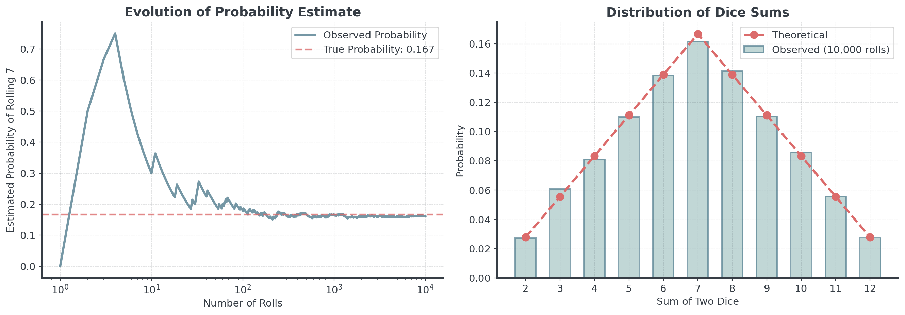
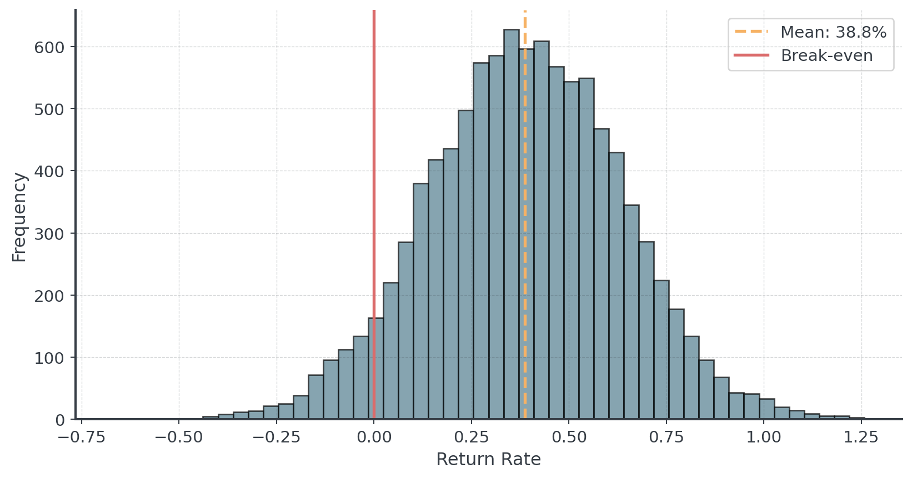
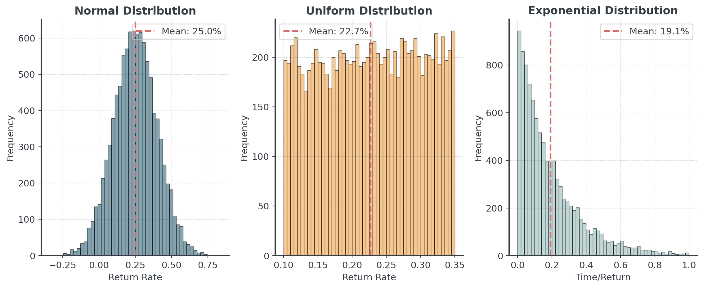
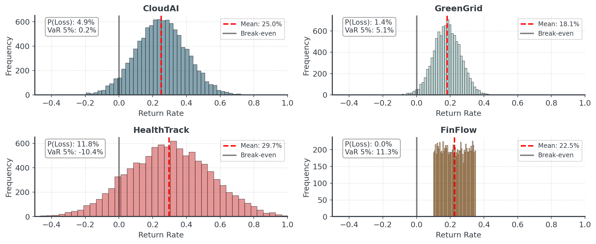
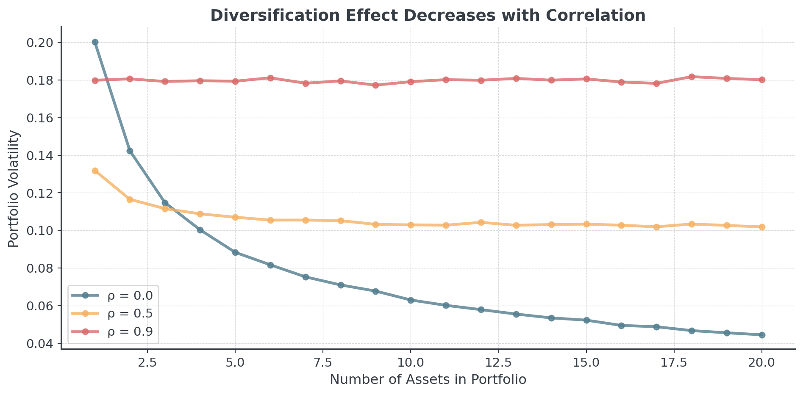

import numpy as np
np.random.seed(42)
# Roll two dice 10,000 times
dice1 = np.random.randint(1, 7, size=10_000)
dice2 = np.random.randint(1, 7, size=10_000)
total = dice1 + dice2
# What fraction equals 7?
probability = (total == 7).mean()
print(f"Simulated probability of rolling 7: {probability:.1%}")Dealing with Uncertainty
Lecture 4 - Management Science
Dr. Tobias Vlćek
Introduction
Client Briefing: TechVenture Innovation Fund
CEO’s Dilemma:
“We have €2M to invest in 2 of 4 startups. Each promises great returns, but the future is uncertain. How do we make the best choice without just gambling?”
Business: Valuing Uncertainty
Question: Why can’t we just pick the two startups with the highest average returns?
- Hidden Risk: A startup with 30% average return but 50% chance of failure might be worse than 20% return with 5% failure chance
- Portfolio Effects: Two risky startups together might amplify risk beyond acceptable levels
- Tail Events: The worst-case scenario can matter as much as the average case
Common Pitfall: Optimizing on averages ignores the distribution of outcomes.
Real-World Examples
Where uncertainty modeling is critical:
Netflix Series Decisions
- Will a show hit 10M viewers?
- Range: 500K to 50M
- Investment: €20M per season
Pharmaceutical R&D
- Will the drug pass trials?
- Success rate: 10-20%
- Investment: €1B over 10 years
When decisions are expensive and outcomes are uncertain, Monte Carlo simulation can be helpful to reduce risk and maximize value!
Core Concepts
Rolling the Dice 10,000 Times I
Question: If you roll two dice, what’s the probability of getting exactly 7 as result?
Method 1: Math
- Count combinations: (1,6), (2,5), (3,4), (4,3), (5,2), (6,1)
- Total combinations: 36
- Probability: 6/36 = 16.67%
Rolling the Dice 10,000 Times II
Question: If you roll two dice, what’s the probability of getting exactly 7 as result?
Method 2: Simulation
Simulated probability of rolling 7: 16.2%How Probability Converges

As we roll more dice, the estimated probability converges to the true value (16.7%)
The Law of Large Numbers
Fundamental Principle: As sample size increases, sample average converges to the true expected value
If \(X_1, X_2, \ldots, X_n\) are independent random samples from the same distribution with mean \(\mu\):
\[\text{As } n \to \infty, \quad \bar{X}_n = \frac{1}{n}\sum_{i=1}^n X_i \to \mu\]
This is WHY simulations works. More simulations = better estimates!
The Central Limit Theorem
Another Fundamental Principle: The sum of many random variables tends toward a normal distribution
What it means:
- Even if individual returns are NOT normally distributed…
- The portfolio of many assets WILL be approximately normal
- The average of many simulations WILL be approximately normal
For Business: This is why we can use normal distributions to model portfolio returns, even when individual assets have skewed or unusual distributions!
Why This Matters for Business
Question: How many simulations do we need for reliable results?
# Test convergence with different sample sizes
sample_sizes = [10, 100, 1000, 10000, 100000]
estimates = []
for n in sample_sizes:
dice1 = np.random.randint(1, 7, size=n)
dice2 = np.random.randint(1, 7, size=n)
total = dice1 + dice2
prob = (total == 7).mean()
estimates.append(prob)
print(f"n={n:6d}: Estimated probability = {prob:.4f}")n= 10: Estimated probability = 0.2000
n= 100: Estimated probability = 0.1900
n= 1000: Estimated probability = 0.1480
n= 10000: Estimated probability = 0.1652
n=100000: Estimated probability = 0.1670Practical Guidelines
How many simulations should you run?
- Quick exploration: 10,000 simulations
- Good for initial insights, prototyping
- Critical decisions: 100,000+ simulations
- Financial risk models, regulatory compliance
- When to stop: When more simulations don’t change conclusion
If your decision changes with 10x more simulations, you didn’t run enough!
Monte Carlo Method
The Monte Carlo Method
Three Simple Steps:
- Model the Uncertainty:
- Define probability distributions for unknown variables
- Simulate Many Scenarios:
- Generate thousands of possible outcomes
- Analyze the Results:
- Calculate statistics from the simulation
Monte Carlo Casino in Monaco inspired the method’s development in the 1940s.
Step 1: Model the Uncertainty
Key Function: np.random.normal(loc, scale, size)
- loc: The center (mean/average)
- scale: The spread (standard deviation)
- size: How many samples to generate
Mean return: 38.8%
Std deviation: 24.8%
Minimum: -67.0%
Maximum: 125.7%Expected Returns
Let’s calculate percentiles with np.percentile().
Question: Do you still know what a percentile is?
print(f"\nPercentiles:")
print(f" 5th: {np.percentile(returns, 5):.1%} (worst 5% of scenarios)")
print(f" 25th: {np.percentile(returns, 25):.1%} (worst 25% of scenarios)")
print(f" 50th: {np.percentile(returns, 50):.1%} (median)")
print(f" 75th: {np.percentile(returns, 75):.1%} (best 25% of scenarios)")
print(f" 95th: {np.percentile(returns, 95):.1%} (best 5% of scenarios)")
Percentiles:
5th: -2.7% (worst 5% of scenarios)
25th: 22.1% (worst 25% of scenarios)
50th: 38.9% (median)
75th: 55.7% (best 25% of scenarios)
95th: 78.6% (best 5% of scenarios)Understanding the Distribution
Question: Before we plot, what shape do you expect for np.random.normal()?

Risk Analysis
Question: What’s the probability that AI-Growth loses money?
Probability of loss: 6.0%
Probability of doubling money: 0.8%With 6 % chance of loss, AI-Growth is relatively safe. Easy for one startup, right?
Different Distributions
Attention: Not everything follows a normal distribution!

Overview
Main Characteristics:
- Symmetric bell curve
- Most values cluster around mean
- Common in nature and business
Main Characteristics:
- All values equally likely
- Hard boundaries (min/max)
- Good for modeling complete uncertainty within range
Main Characteristics:
- Many small values, few large ones
- Always positive
- Common for waiting times and rare events
When NOT to Use Monte Carlo
Monte Carlo is powerful, but not always the right tool:
- You have a simple analytical solution
- Use math directly: no need for 10,000 simulations!
- You can’t reasonably estimate input distributions
- Garbage in = garbage out, need basis for assumptions
- The problem is deterministic (no uncertainty)
- Simulation adds complexity without value
Simulation is a tool for managing uncertainty, not creating false precision!
Portfolios
Combining Investments
Suppose we have the following startups:
CloudAI, GreenGrid, HealthTrack, FinFlow
Question: If we must pick 2 of 4, how many unique pairs exist?
The Math:
\[\binom{4}{2} = \frac{4!}{2! \times 2!} = \frac{4 \times 3 \times 2 \times 1}{(2 \times 1) \times (2 \times 1)} = \frac{24}{4} = 6\]
Each combination has different risk-return characteristics!
Four Startup Profiles

Question: Which startup is the best choice?
Key Metrics for Decision Making
Question: Which metrics matter most for investment decisions?
- Expected Return: Average outcome across all scenarios
- Volatility (Risk): Standard deviation of returns
- Probability of Loss: How often do we lose money?
- Upside Potential: Chance of exceptional returns (>50%)
- Tail Risk: What happens in the worst 10% of cases?
No metric tells the whole story. Investors consider multiple dimensions of risk and return.
Understanding Tail Risk
Tail Risk: The danger lurking in worst-case scenarios
Expected Shortfall (ES)
- Average loss in worst X% of cases
- Goes beyond simple probability
- Measures depth of potential losses
- Critical for risk management
A portfolio with higher average returns might have catastrophic tail risk. Always look at the extremes!
Correlation & Dependence
The Independence Assumption
So far, we’ve assumed startups succeed or fail independently.
Independent Events:
- CloudAI’s success doesn’t affect GreenGrid’s success
- Each startup faces separate, unrelated risks
- Portfolio risk = Average of individual risks
Question: Is this realistic in the real world?
Reality Check: Many business risks are correlated! Economic downturns, market trends, and technology shifts affect multiple companies simultaneously.
What is Correlation?
Correlation measures how two variables move together.
\[\rho_{X,Y} = \frac{\text{Cov}(X,Y)}{\sigma_X \sigma_Y} \quad \text{where } -1 \leq \rho \leq 1\]
Interpreting Correlation:
- ρ = +1: Perfect positive correlation (move together)
- ρ = 0: No correlation (independent)
- ρ = -1: Perfect negative correlation (move opposite)
Correlation in Practice

In Python: np.corrcoef(returns1, returns2) calculates correlation
Why Correlation Matters
Two AI startups in your portfolio:
Scenario 1: Independent (ρ = 0)
- One fails due to technical issues, other succeeds
- Risk is averaged out
Scenario 2: Positively Correlated (ρ = 0.8)
- Both rely on same AI infrastructure provider - risk is amplified!
Diversification only reduces risk when investments are not highly correlated!
Impact on Portfolio Risk

Higher correlation = Wider distribution = More risk!
Real-World Correlation Examples
Common sources of correlation in business:
- Industry-specific: All tech startups affected by downturn
- Geographic: All European companies affected by EU regulations
- Supply chain: Multiple companies relying on same supplier
- Macroeconomic: Interest rates, inflation affect most businesses
Diversification: Choose investments with LOW correlation to reduce portfolio risk!
When Diversification Fails

2008 Financial Crisis: Many “diversified” portfolios collapsed due to correlations!
Making Smart Decisions
Decision Framework
- Define Your Risk Tolerance
- Can you afford to lose money and what’s your time horizon?
- Are you risk-averse or risk-seeking?
- Evaluate Multiple Metrics
- Don’t just maximize returns, consider volatility and risk
- Look at probability of achieving goals
- Scenario Test
- What if distributions change or a company fails?
The Plan for the Day
Hour 1:
Lecture
- Concepts
- Examples
- Visualization
Hour 2:
Practice Notebook
- Simulation
- Hands-on coding
- Build your skills
Hours 3-4:
Competition
- TechVenture
- Team collaboration
- €2M investment
Remember: The lecture gives you concepts. The notebook gives you practice. The competition tests your skills!
Hour 2: Simulation
Your Practice Case: Bean Counter Expansion
- Model uncertain variables (customers, spending)
- Combine multiple uncertainties
- Calculate business metrics (VaR, profit probability)
- Make data-driven recommendations
Hours 3-4: The Challenge
TechVenture Investment Competition
- Your Budget: €2 million
- Your Choice: Pick 2 of 4 startups
- Your Goal: Maximize risk-adjusted returns
- Your Deliverable: One-slide recommendation + 3-minute pitch
Consider multiple risk metrics and prepare a clear justification!
Prizes: 10 / 6 / 3 bonus points for top three teams!
Key Takeaways
What You’ve Learned Today
Concepts
- Monte Carlo simulation
- Probability distributions
- Risk has multiple dimensions
- Expected Value vs. Variance
- Correlation and dependence
Skills
- Using
np.randomfor simulation - Calculating risk metrics
- Visualizing uncertainty
- Comparing portfolios
- Understanding correlation
Monte Carlo doesn’t predict THE future - it shows possible futures! And correlation can amplify or reduce risk!
Next Week
Forecasting the Future
- Moving from simulation to prediction
- Time series analysis
- Trend and seasonality detection
- Measuring forecast accuracy
Now, short break and then we start coding!
Dealing with Uncertainty | Dr. Tobias Vlćek | Home